The Audi Q8 combines the elegance of a four-door luxury coupé with the practical versatility of a large SUV. Richly equipped , comprehensively connected and tough enough for off-road duty, it is a confident companion for business and leisure. Expressive design with new Singleframe and features from the original Audi quattro. Generous, elegant interior, touch operating concept and high-tech navigation: The Audi Q8 is a confident companion for business and leisure.


 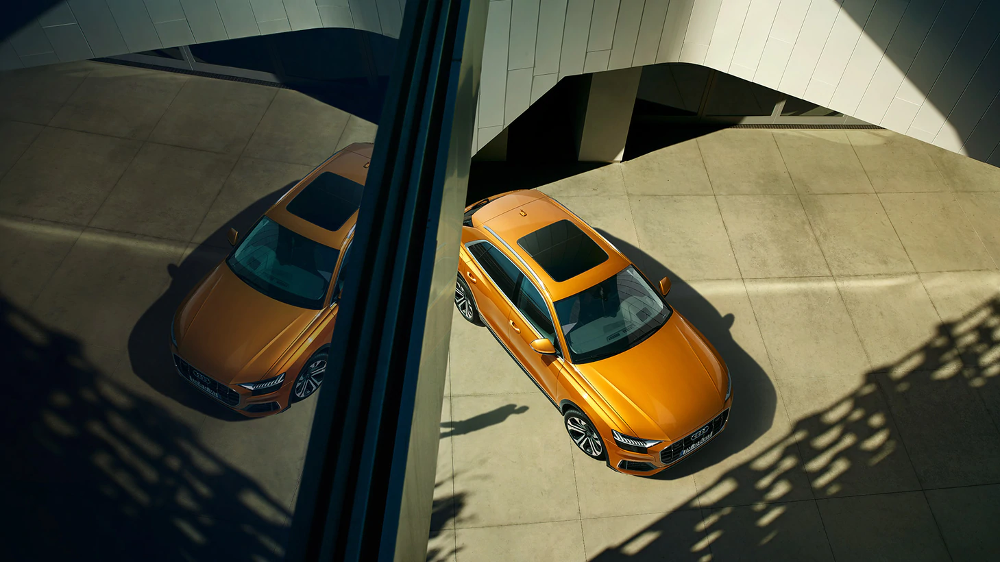
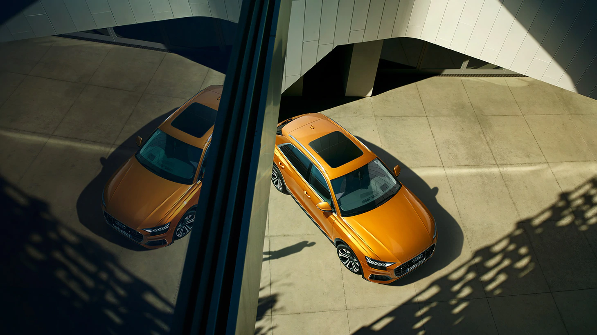
 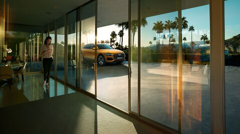
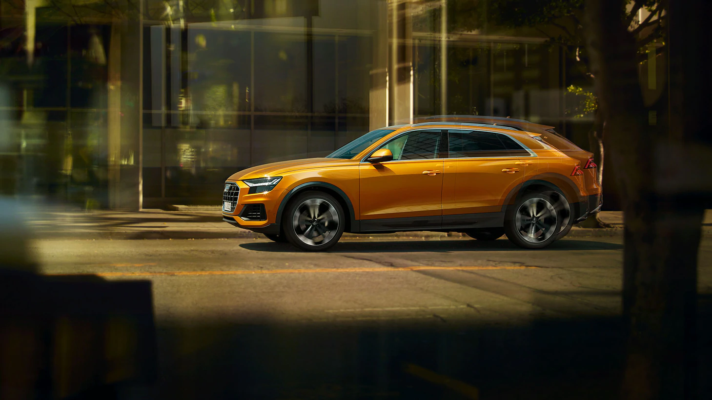
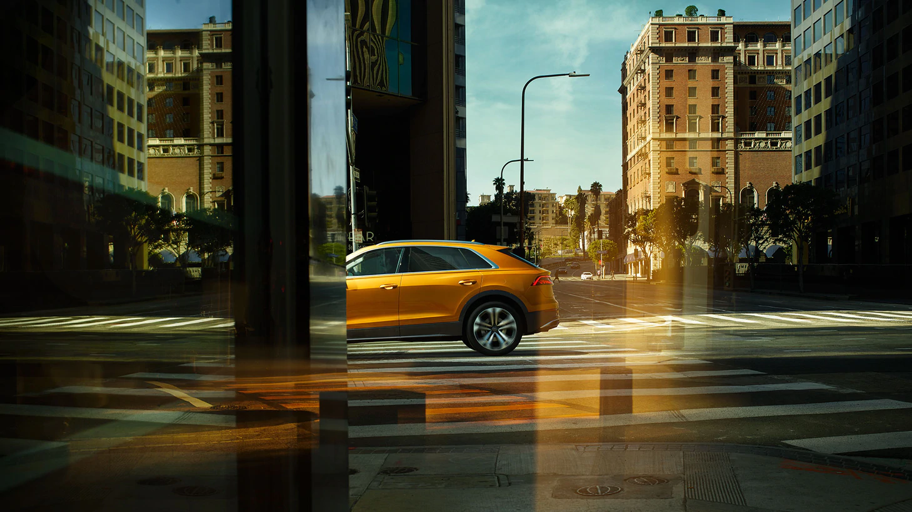
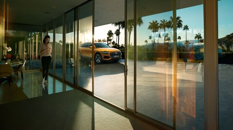
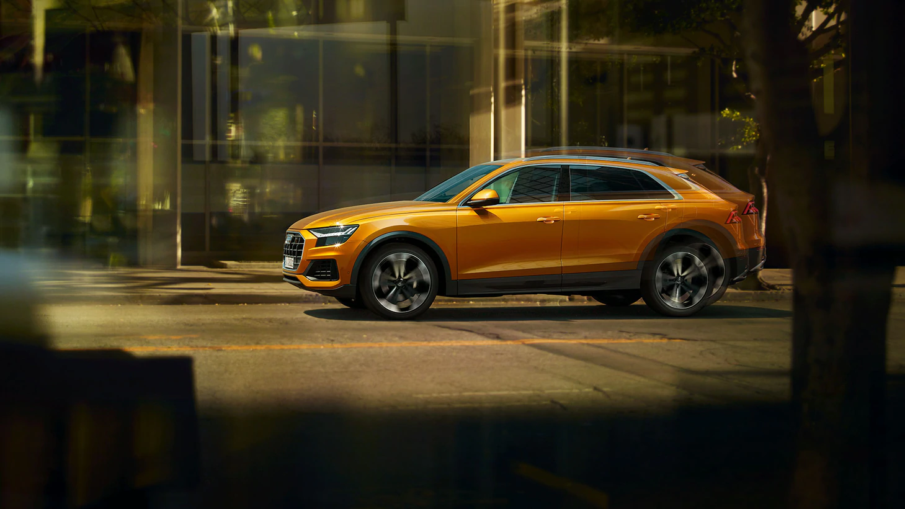
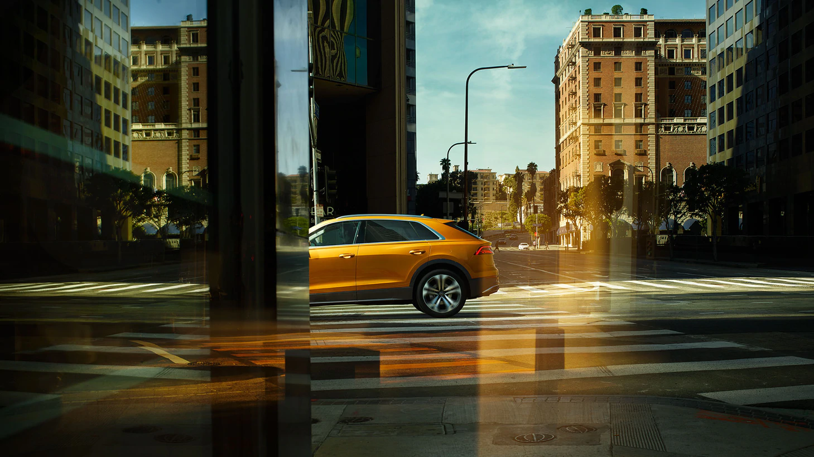


 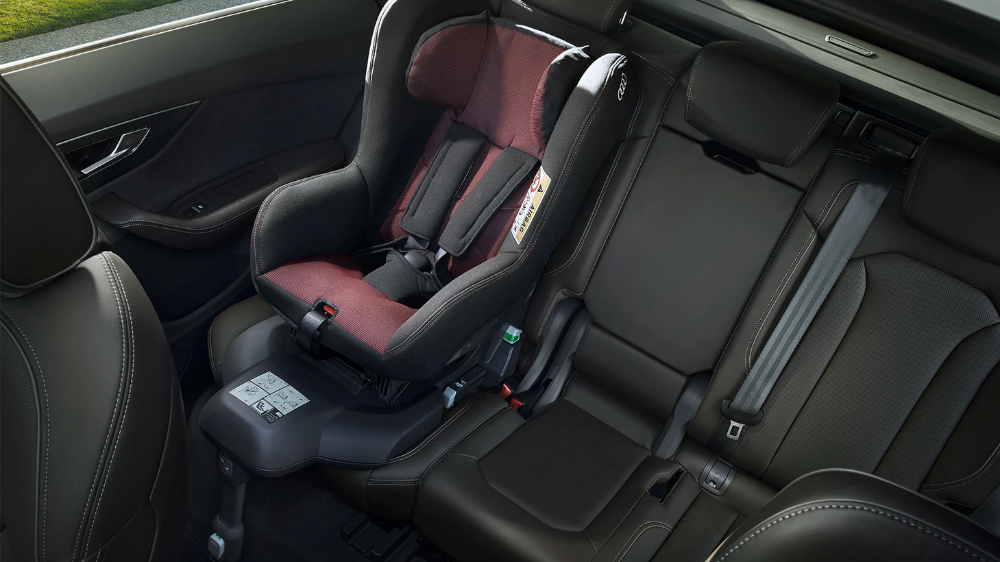
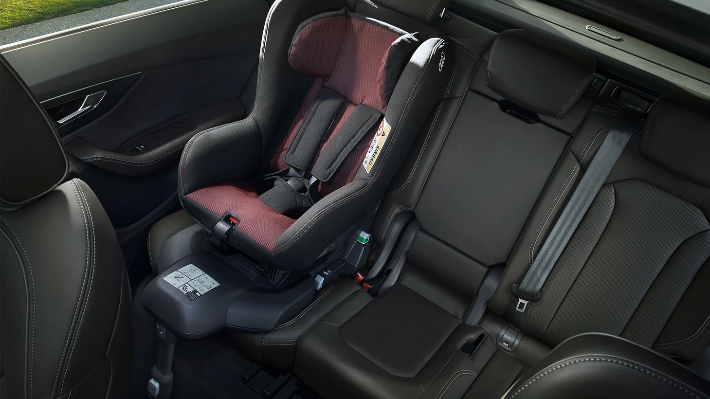


With the imposing Singleframe in octagonal design, the Audi Q8 is the new face of the Q family. The brawny radiator grille stands upright and, together with the spoiler that has been drawn toward the front and the large, highly contoured air inlets, emphasizes the self-confident look . The elegantly sloping roofline terminates in gently inclined D-pillars and rests against the quattro blisters above the wheel arches. A light strip connects the units at the rear.
The purely mechanical center differential transfers the forces to the front axle and rear axle at a ratio of 40:60 as standard. When required, it transfers the majority to the axle with the better traction.Besides the standard progressive steering, whose steering ratio becomes increasingly direct the further the steering wheel is turned. The 3.0 TFSI engine is particularly efficient thanks to the new mild hybrid technology (MHEV).
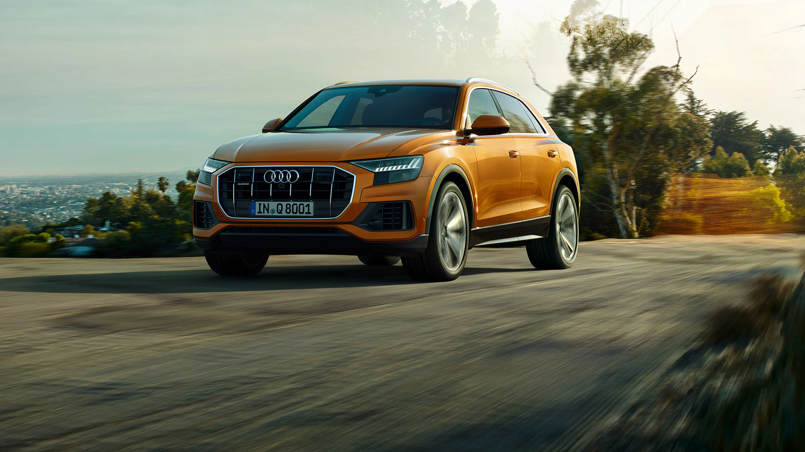Easy-to-understand symbols stand for the digital precision from Audi and for the high level of integration of architecture and operation. The central element is the top MMI touch response display. With its black - panel look, it almost dissolves into a large, black surface when switched off. All elements refer logically to one another, from the flat air vent strip to the wide console on the center tunnel bearing the tiptronic selector lever.
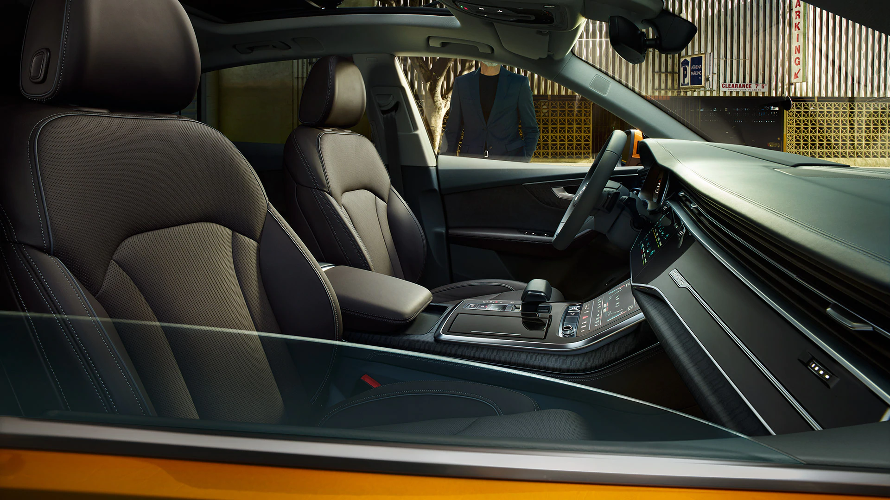In the dark, contour light traces the distinctive design lines of the interior and provides backlight for the three dimensionally lasered quattro badge above the glove compartment – an example for the love of detail at Audi.

HD Matrix LED technology illuminates the road.
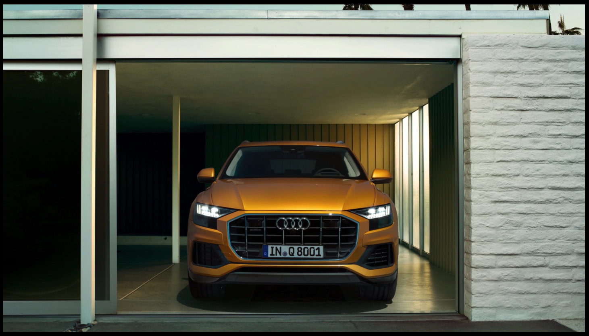A finale look at the rear end of the new Audi Q8 approves the first impression: The SUV coupe achieves an unobtrusive presence through subtle lines and clear contours , which at the same time symbolizes high quality and dynamism. Expressive design with the features of the original Audi quattro. The new Audi Q8.